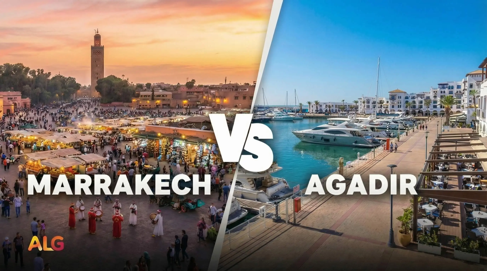

Where To Stay In Agadir: Best Areas, Best Hotels, And The Right Base For Your Trip
Choose the right part of Agadir for your trip, then shortlist the hotel names that make the most sense for beach, family, budget, or marina stays.
Read guide
Where to stay, when to go and what to do. Practical advice from people who know this place.
Explore the guidesA good trip begins with a little local knowledge.

Everything you need to plan Paradise Valley from Agadir, including travel time, parking, swimming conditions, safety, and whether to book a tour.
Read the guidePlan the details, find your next adventure and get more out of your days in Agadir.
Choose the right part of Agadir for your trip, then shortlist the hotel names that make the most sense for beach, family, budget, or marina stays.
Read guide
Find the best things to do in Agadir, from Paradise Valley and quad biking to souks, beach time, and easy day trips.
Read guide
Plan a simple first trip with one city and beach day, one Paradise Valley-style nature day, and one Taghazout coast day.
Read guide
Typical MAD ranges for buses, taxis, sleep, and food—plus a 3-day budget plan, a sample total table, and where tours save money.
Read guide
Climate, pace, what each city does better, and a sample 5-day plan. See Marrakech on a €38 day trip from Agadir without changing hotels—honest local guide comparison for 2026.
Read guide
Distance, why there is no through-train yet, coach options, and when a guided Marrakech day from the coast beats DIY—local guide breakdown for 2026.
Read guide
Use this quick comparison to choose between the full city tour and the cable car alone when you only have half a day in Agadir.
Read guide
Resort beach versus windy UNESCO medina on the same Atlantic coast. ~170 km apart; Essaouira day trip from Agadir €40 (~11 h) with hotel pickup—honest local comparison for 2026.
Read guide
When to visit for swimming, Paradise Valley, and Marrakech day trips—honest °C ranges, rainy-season notes, crowd windows, and tour matches from €25–€60 with pickup.
Read guide
Compare Agadir quad biking routes, pickup zones, prices, and beginner suitability before choosing a desert, coastal, or mountain-style ride.
Read guide
Combine quad biking with Paradise Valley! Explore Atlas Mountain foothills, argan forests & Berber villages on ATV. Unique mountain trails from €50. Book today.
Read guide
Quad biking from Taghazout with surf camp pickup. Coastal cliff trails, beach routes & desert dunes. Combine with surfing! From €45 with local guides. Book now.
Read guide
Explore Morocco's wild Atlantic coast on quad bike! Tamri fishing village, famous goats in argan trees, Banana Beach. Remote adventure from €50. Book now.
Read guide
A practical Agadir family guide with age-by-age activity picks, stroller-friendly ideas, safety notes, and easy half-day planning.
Read guide
Compare Agadir day trips by route, travel time, pickup ease, and budget before choosing Paradise Valley, Marrakech, Essaouira, or Souss Massa.
Read guideA practical local guide to Souss Massa for wildlife lovers, photographers, and travelers who want a quieter half-day nature route near Agadir.
Read guide
Use this guide to match Agadir shore excursions to your port time, meeting logistics, and a safer return-to-ship buffer.
Read guideBrowse experiences led by locals, with clear details and an easy way to book.